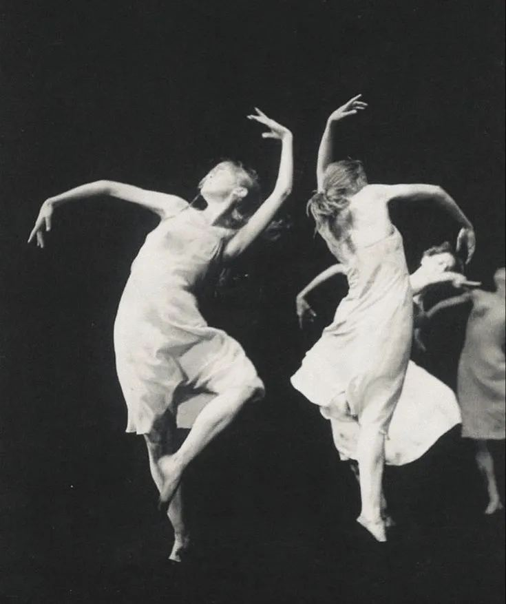

Seeds of Renaissance Manifesto
A Manifesto for Civilizational Renewal
For all the living beings whose heart burns to see a new world emerge.
This manifesto is non-sectarian. It is to be alive and not to be set in stone, dead and irrelevant. It is a reverence and celebration of life. It expresses patterns and guiding principles, like a common DNA, from which evolutions may arise.

We are a movement called to bring forth a renaissance.We are seed-bearers pioneering a world that works for everyone.We create a new world through our work.We are the bridge between the dying past and the future unborn.
So what will be this Renaissance we are seeding? It is yet to be known but we answer to the call of a dawn, calling us to value interbeingness, awakening to the wisdom of the whole, inner-evolution and dancing with the richness of complexity.
Life as an art.
In this soil we plant the seeds of a Renaissance.